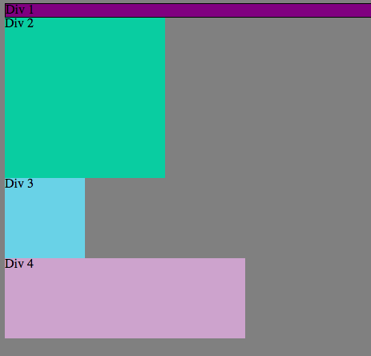
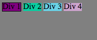

Version Control
February 04, 2015
There are two great benefits to version control: collaboration with others and multiple saved files. Version control (we are learning Git but it applies to all version control software) allows a very large number of individuals to work on the same file at the same time. It does this by having a master file from which you can create branches that you can play around with it. When you are satisfied with the results, the changes are merged with the master. It will find the parts that were changed and only modify those. That means that you can be working on one part of the file while your partner works on another. Then you can come back to combine the work you have done.
In case there were any issues, you can revert back to an older master file. That is the other benefit of version control. It allows you to see all of the files that you have commited (saved). It works very very similarly to a save point in a game. You can proceed forward but if you ever wanted to return to a checkpoint you always can. If for example, you were working on a branch (a copy of the master file) and were having bugs that you couldn't figure out, it may be beneficial to start from scratch. In that instance you still have the master file without having to manually unravel your mess. It also works great in situations where you want to see why certain code was typed the way they were or if you wanted to see who made those changes. These records are always available and makes your life easier in case you had questions.
In DBC we are using GitHub to store our code. GitHub is similar to Git in that it shares the same great benefits but it is online. Being online allows anyone access from any computer. I can download the files I need and when I am done, I simply upload them to GitHub for storage. Then any of your teamates can do the same. It allows you to easily share the work that you do with the rest of the world.
In the Kitchen
February 05, 2015
The DBC experience seems like a tough one with lots of challenges ahead, kind of like starting a video game and not know what is exactly ahead. There will be a lot of work ahead but there will also be guidance. Although there will be people along the way, it will be up to me to get what I need out of the program myself. In coding, there is no shortcut. You either know what you are doing or you do not.
You will survive or fail based on your own capabilities. It may seem tough but I don't see a way around it. When I go into an interview, I better be prepared and know what I am talking about. This is exactly one of the reasons I signed up for DBC. I really needed a kick in the pants to get me to where I want to go.
Since going through some of the exercises on CodeAcedemy, I realized that I have a tremendously hard time learning in a structured environment. I have forgotten how to study. I am glad to begin DBC and learn things the hard way again. The money I have already put in will hopefully motivate me further from squandering my time here.
I am also glad that DBC focuses on more than just the mechanics but also the process of learning. Ever since watching some of the Thinking About Time materials in the first challenge, I have noticed that I have more willpower than I thought. I have already become a little less lazy just by doing a few little things. I really hope this sticks and builds good habits. I know I am going to need it in 8 weeks.
Inline v. Inline-Block
February 15, 2015
Cascading style sheet has a a lot of ways to help you display elements properly on your website. One of the most useful feature is inline and inline-block. This allows you to have elements on the same line instead of on different rows. Let's see how it looks and then we will go into the difference between inline v. inline-block.
Block
Inline
Inline-Block

As you can see in the above pictures, the three different display attributes leads to the divs elements showing up differently on your screen. In the first image, you can see that the block display lines puts each new element on its own line. It also keeps the width and height attributes intact.
In the second image, you can see that the inline display puts all of the elements on the same line. Each element is now the same exact size both in height and width.
In the final picture, the four elements are now in the same line but still maintain their original height and width.
The biggest difference between inline-block and inline is the block attribute in inline-block. Inline-block still keeps the elements on the same line as inline but it also acts just like the block display. It allows the elements to retain their height and width attributes. In the inline picture, all of the divs have the same shape because they are limited by the text they contain. They are only as big as whatever is in them. In inline-block, you can specify those attributes even if most of it is empty.